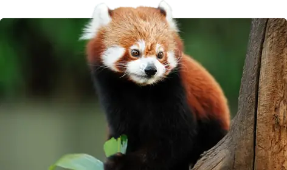

|

|
Do you know the red panda?It is a racoon like creature with beautiful red and black fur mostly inhabiting the eastern Himalayan region and southwest China. It is a very exotic yet endangered species with only 10,000 individuals alive and is on the verge of extinction. |
How do they look?
It has reddish-brown fur, a long tail and it is roughly the size of your pet cat. Its teeth are hard and it has a tail with six alternating transverse ochre rings which provide balance and excellent camouflage in a green habitat which consists of moss and lichen. Its fur acts as thermal insulation. The red panda is a professional at eating bamboo with strong, curved and semi-retractile claws with this it has a false thumb similar to the giant thumb for gripping bamboo better.
What do they eat?Its main diet is bamboo leaves as bamboo stems cannot be digested by them due to high levels of cellulose but as it excels in climbing, its diet also includes eggs, birds and insects. In captivity, They were observed to eat birds, flowers, maple and mulberry leaves, and bark and fruits of maple, beech, and mulberry. They also eat mushrooms, roots, acorns, lichens, and grasses. Occasionally, they supplement their diets with fish and insects. They eat over 1.5kg of fresh leaves and 4kg of fresh shoots daily. They can taste artificial sweeteners, and they are the only non primates known to be able to do so. |

|
Created and Coded by Aditya Rajkumar 7A